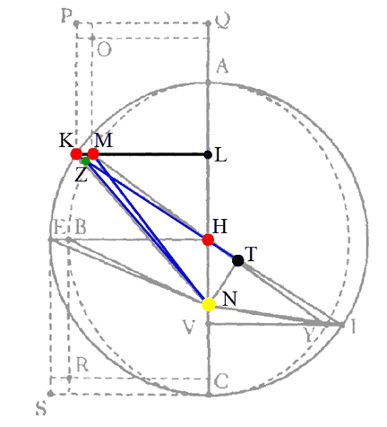

Chapter 58:
Creating the Ellipse
“…no figure is left for the planet to follow other than a perfectly elliptical one.” (p.575)
An Error in the Equations
Although the distances determined in chapter 56 are correct, Kepler must also develop the correct equations. When testing his hypothesis, he reports that the planet is made to be 5½′ ahead of where it should be at the upper quadrant, and 4′ behind in the lower quadrant. Dissatisfied with so large an error, Kepler writes that he rejected his hypothesis of chapter 56, which was supported by the distances of chapters 51 and 53 as well as the physical arguments of chapter 57. Instead, he again considers that the planet may move in an ellipse, considering himself to be on a new and different path. But:
The very truth, and the nature of things, though repudiated and ordered into exile, sneaked in again through the back door, to be received by me under an unwonted guise.
Consider a slight change in the reciprocation hypothesis:
The planet’s distance is determined by the diametral length AE. That length is swung over as with a compass with its tip on point A. It intersects the line BD at I, and the perpendicular DC at F. In chapter 56, Kepler placed the planet at I, which gave it an equation 5½′ too large. Now, he will place it at F.
This slight change corrects the equations, and makes the planet move in an ellipse! This ellipse is in between the incorrect circle of chapter 43 and the incorrect ellipse of chapter 47:
And the excess of the former and the defect of the latter are equal. Bit the only figure occupying the middle between a circle and an ellipse is another ellipse. Therefore, the ellipse is the path of the planet, and the lunule cut off from the semicircle has half the breadth of the previous one, namely 429.
Kepler recounts his thinking: The error in the equations suggests an ellipse between the circle and the ellipse, while the distances as determined in chapters 51 and 53 demand the diametral distances, which are supported by the physical arguments of chapter 57. Which should Kepler use: the shape of the ellipse or the diametral reciprocation? Nearly driving himself crazy trying to decide between the two, Kepler realizes that he needn’t choose:
O ridiculous me! To think that the reciprocation on the diameter could not be the way to the ellipse!
A Comparison
Here is a comparison of the puff-cheeked orbit of chapter 56 in olive green, and the new, elliptical path developed in chapter 58 in red:
Press s and x to change the eccentricity, and p to toggle the puff-cheeked orbit on and off.
PS: Another view
Here you have another diagram of the change from the puff-cheeked orbit to the elliptical orbit. The puff-cheeked orbit (of chapter 56) locates the planet at Z, where Z is on the line HK, and length NZ is equal to length KT. Now, Kepler will place the planet at M, which is the same length KT away from N, but now the length is rotated over to the perpendicular line KL. Placing the planet at point M causes the planet to move in an ellipse. The three equal lengths, KT, NZ, NM are blue.
| Next [Chapter 59] |